Mihara, Hiroshima: things to do, food and stays
Mihara · Hiroshima
Mihara
Highlighted on the Hiroshima map.

Stay
ホテルルートイン三原駅前
Hotel Route Inn Mihara Ekimae
Hotel in Shiro, Mihara with a large communal bath.
広島エアポートホテル
Hiroshima Eapoto Hotel
Hotel in Hongo, Mihara with breakfast available and parking.
ホテル白竜湖リゾート
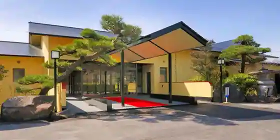
Hotel Hakuryu Mizumi Resort
Resort hotel in Yamato, Mihara with private baths and lakeside location.
三原国際ホテル
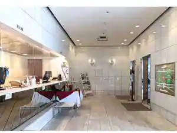
Mihara Kokusai Hotel
スーパーホテル三原駅前 天然温泉 浮城の湯
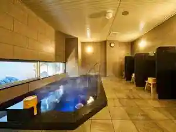
Super Hotel Mihara Ekimae Tennen Onsen Ukishiro No Yu
Hotel in Shiro, Mihara with parking.
ホテルヤッサ
Hotel Yassa
Hotel in Shiro, Mihara with business travelers; 1-minute walk from Jrmihara Station.
センターホテル三原 瀬戸内シーサイド（ＢＢＨホテルグループ）
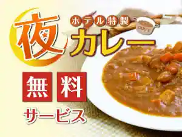
Center Hotel Mihara Setochi Shisaido (BBH Hotel Gurupu)
Hotel in Shiro, Mihara with breakfast available.
山根旅館
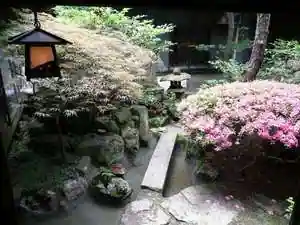
Yamane Ryokan
Ryokan inn in Shiro, Mihara; 5-minute walk from Jrmihara Station.
ホテルリブマックスBUDGET三原駅前
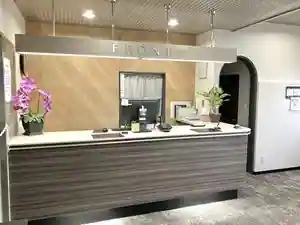
Hotel Ribumakkusu BUDGET Mihara Ekimae
三原シティホテル
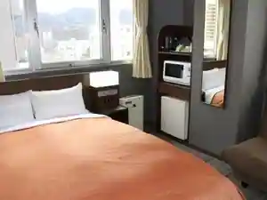
Mihara City Hotel
Hotel in Shiro, Mihara with business travelers; 3-minute walk from Jrmihara Station.
ホテル トーダイ
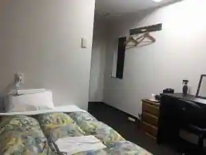
Hotel Todai
岡田民宿
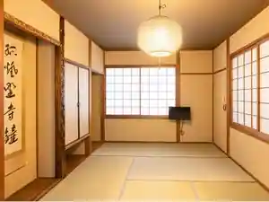
Okada Minshuku
Family-run minshuku in Itosaki, Mihara with local seafood dinners.
Dining
お好み焼き てっちゃん 本店
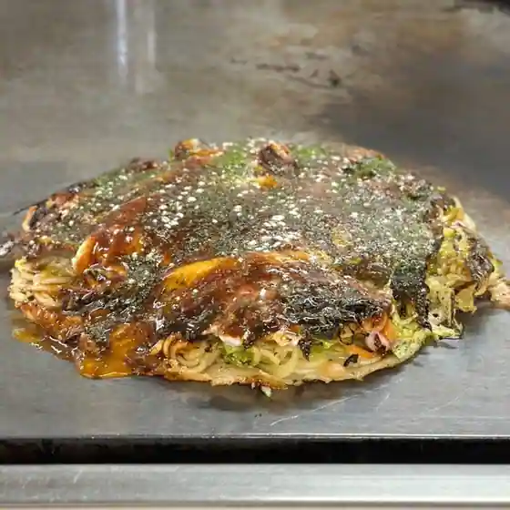
O Konomi Yaki Tetchan Hon
城町 藤もと
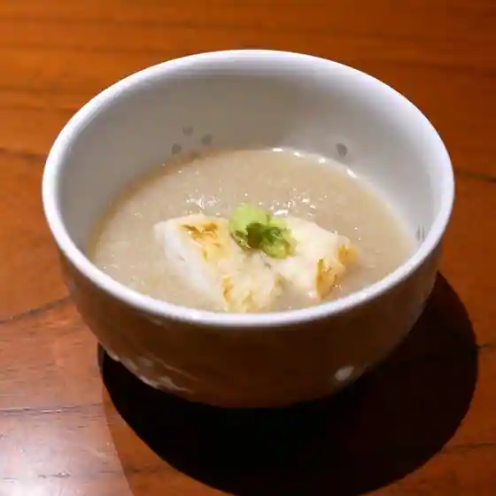
Shiro Machi Fuji Moto
塩そば まえだ
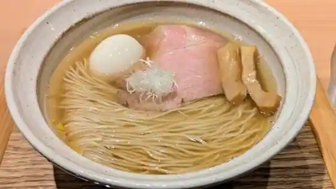
Shio Soba Maeda
来々軒
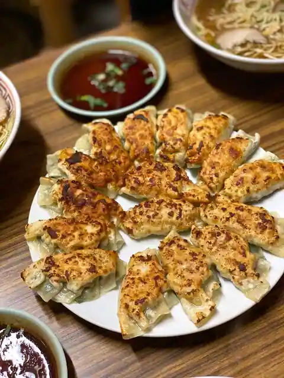
Rairai Ken
おはぎの店こだま
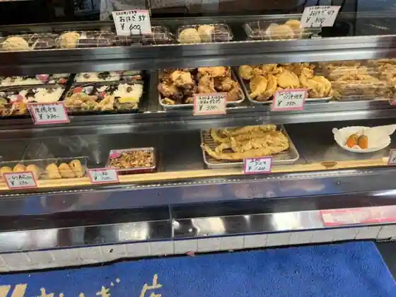
Ohagino Mise Kodama
OYSTER FARM Hiroshima
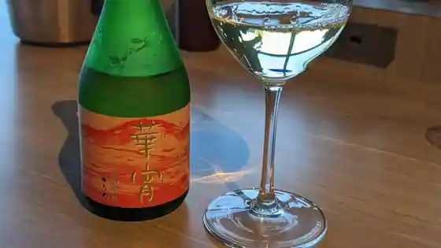
OYSTER FARM Hiroshima
お食事処 蔵
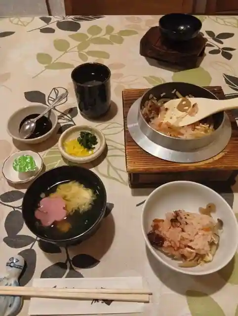
O Shokuji Tokoro Kura
つぼみ
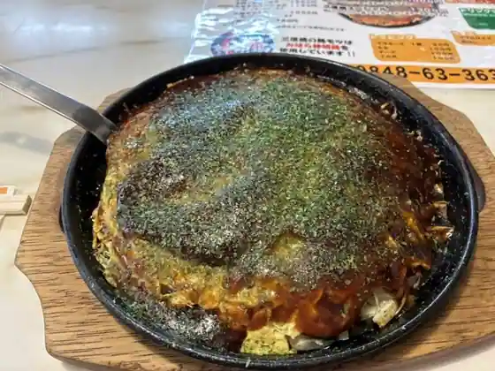
Tsubomi
ウオトシ御食事処
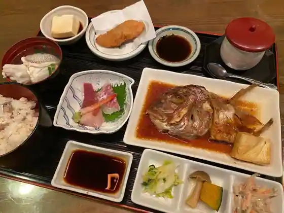
Uotoshi Mike Koto Tokoro
石亭
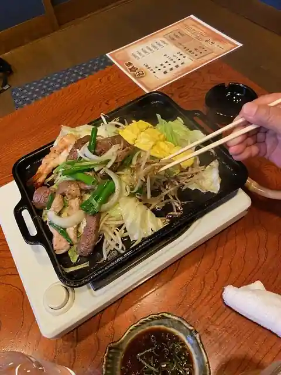
Sekitei
和食処 登喜将
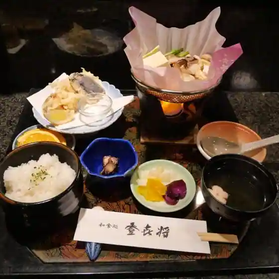
Washoku Tokoro Toki Sho
三万石
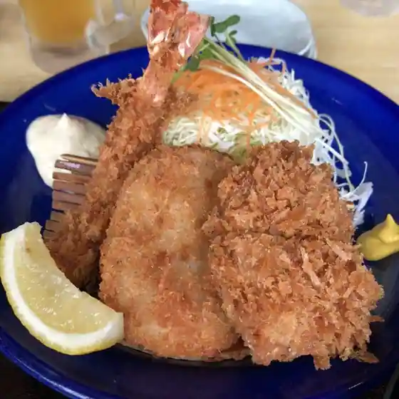
Sanman Ishi
ラーメン康 本郷本店
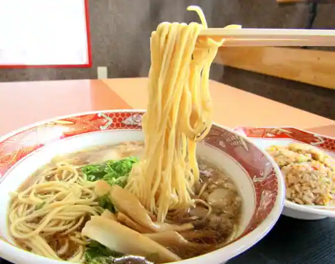
Ramen Yasushi Hongo Hon
ゑびす家
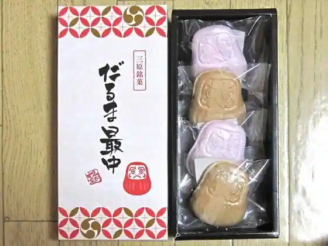
Ebisu Ie
尾道ラーメン 麺や 一六
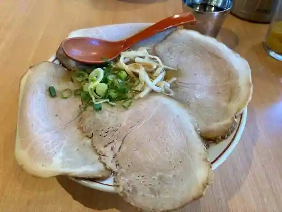
Onomichi Ramen Men Ya Ichiroku
天空カフェ&ファクトリー
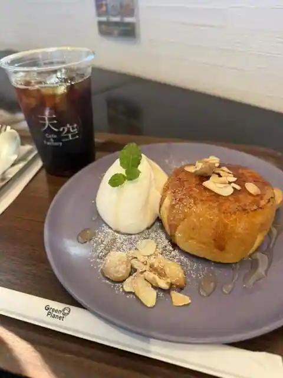
Tenku Cafe & Fakutori
ルマーダ
Rumada
stelladew coffee 広島空港店
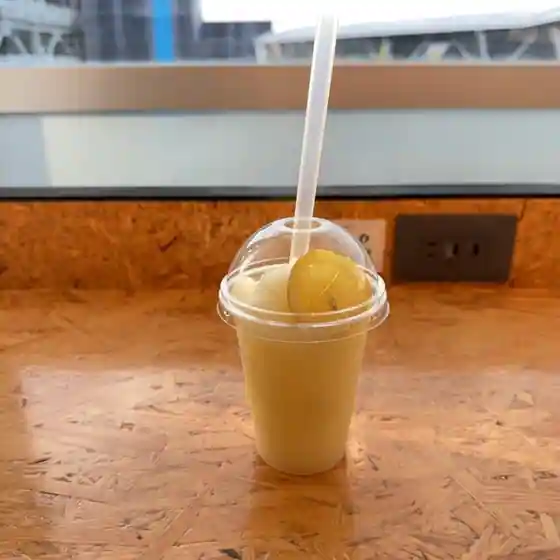
stelladew coffee Hiroshima Kuko
道の食堂 やはた亭
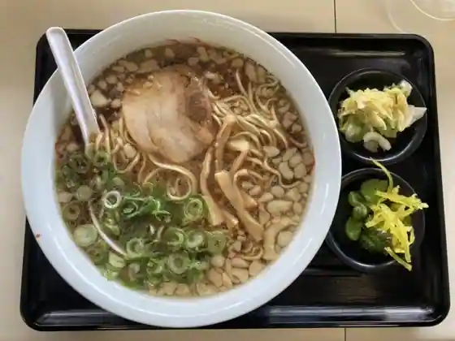
Michi No Shokudo Yahata Tei
ひょこめ
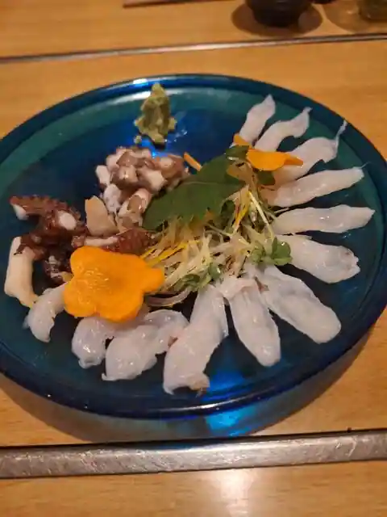
Hyokome
むらか美
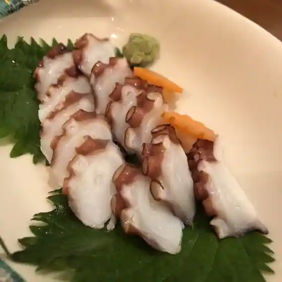
Muraka Bi
ラーメンの店 源来軒
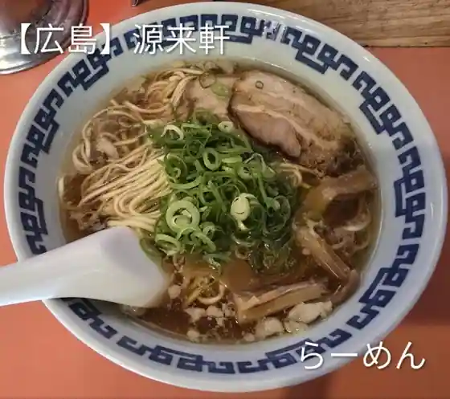
Ramen No Gen Rai Ken
RESTAURANT YOGANSU
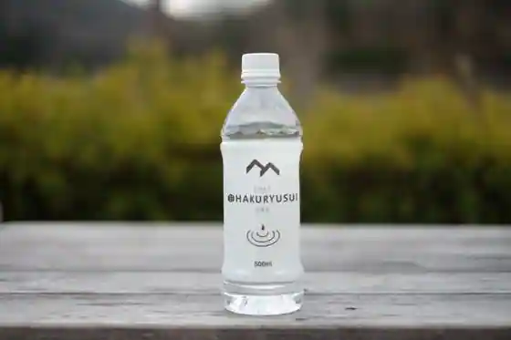
RESTAURANT YOGANSU
25STA
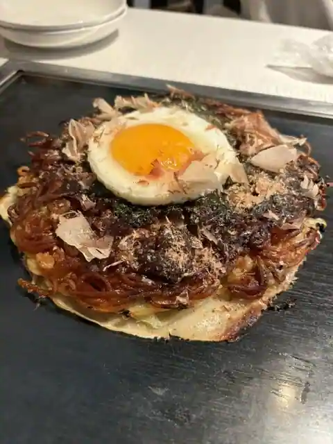
25STA
Sights
Mihara Castle Ruins

Hotoke Tori Tera

Kui Iwa Umi

Mihara Naiko

Sunami Minato